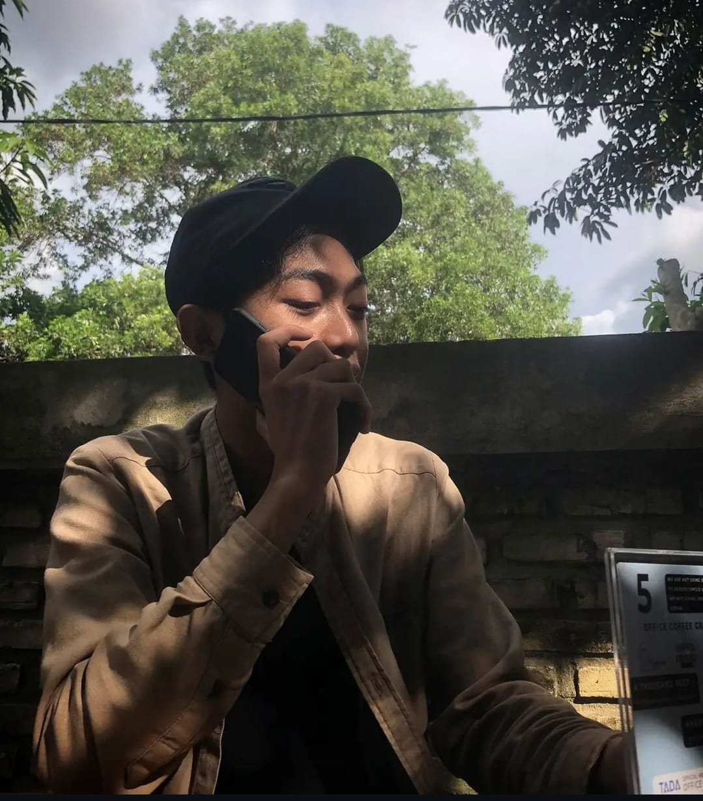
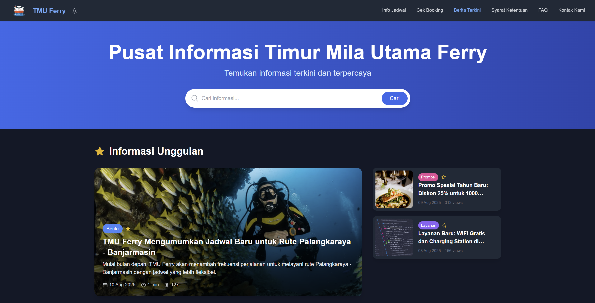

Halo! Saya Adi Rakhmatullah Ma'arif, seorang pengembang web berpengalaman yang ahli dalam merancang dan membangun sistem informasi berbasis web yang responsif, ramah pengguna. Dengan fokus pada kualitas dan efisiensi.
HTML
CSS
JavaScript
PHP
Laravel
Docker
React
Boostrap
Tailwind
MySQL
NPM
Saya menikmati kegiatan olahraga luar ruangan seperti sepakbola dan gemar membaca. Saya juga sangat tertarik mempelajari teknologi baru dan berkontribusi pada proyek open-source.
Februari 2020 - Sekarang
Membuat, Mengembangkan dan memelihara website klien, memastikan performa tinggi dan responsif.
RSJ Sambang Lihum · Januari 2024 - Sekarang
Mengembangkan dan memelihara SIMRS (Sistem Informasi Rumah Sakit) yang digunakan oleh RSJ Sambang Lihum, memastikan keamanan dan kenyamanan sistem.

Platform digital terintegrasi untuk reservasi dan manajemen tiket kapal dengan fitur real-time scheduling, payment gateway, dan mobile responsive interface untuk optimalisasi pelayanan transportasi laut.
Sistem informasi pariwisata berbasis web yang menyediakan data komprehensif destinasi wisata, event budaya, dan promosi potensi pariwisata daerah untuk meningkatkan kunjungan wisatawan.
Aplikasi manajemen penggajian dan remunerasi personel militer dengan sistem kalkulasi otomatis, pelaporan keuangan, dan integrasi database kepegawaian untuk transparansi administrasi.
Sistem informasi manajemen sekolah terintegrasi yang mencakup administrasi akademik, manajemen siswa, penjadwalan, dan pelaporan untuk meningkatkan efisiensi operasional pendidikan.
Aplikasi presensi digital berbasis geolocation dengan fitur tracking real-time, validasi lokasi kerja, dan reporting analytics untuk optimalisasi manajemen sumber daya manusia.
Platform manajemen aset dan digitalisasi arsip institusi pendidikan dengan sistem kategorisasi otomatis, pencarian cerdas, dan backup terdistribusi untuk preservasi data jangka panjang.